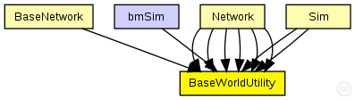
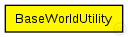

This documentation is released under the Creative Commons license
This documentation is released under the Creative Commons licenseC++ definition: click here
Basic utility module for the whole network. Provides utility methods and information used by the whole network.
The following diagram shows usage relationships between types. Unresolved types are missing from the diagram. Click here to see the full picture.
The following diagram shows inheritance relationships for this type. Unresolved types are missing from the diagram. Click here to see the full picture.
If a module type shows up more than once, that means it has been defined in more than one NED file.
| BaseNetwork (compound module) | (no description) |
| Network (compound module) | (no description) |
| Network (compound module) | (no description) |
| Network (compound module) | (no description) |
| Network (compound module) | (no description) |
| Network (compound module) | (no description) |
| Network (compound module) |
Author: Karl Wessel |
| Sim (compound module) | (no description) |
| Sim (compound module) | (no description) |
| bmSim (network) | (no description) |
| Name | Type | Default value | Description |
|---|---|---|---|
| coreDebug | bool |
debug switch for the base framework |
|
| playgroundSizeX | double |
x size of the area the nodes are in (in meters) |
|
| playgroundSizeY | double |
y size of the area the nodes are in (in meters) |
|
| playgroundSizeZ | double |
z size of the area the nodes are in (in meters) |
|
| useTorus | bool |
use the playground as torus? |
|
| use2D | bool |
use a 2-dimensional world? |
// Basic utility module for the whole network. // Provides utility methods and information used by // the whole network. simple BaseWorldUtility { parameters: bool coreDebug; // debug switch for the base framework double playgroundSizeX @unit(m); // x size of the area the nodes are in (in meters) double playgroundSizeY @unit(m); // y size of the area the nodes are in (in meters) double playgroundSizeZ @unit(m); // z size of the area the nodes are in (in meters) bool useTorus; // use the playground as torus? bool use2D; // use a 2-dimensional world? }
This documentation is released under the Creative Commons license